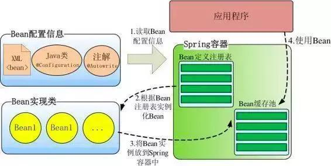

Spring容器高层视图
Spring 启动时读取应用程序提供的Bean配置信息，并在Spring容器中生成一份相应的Bean配置注册表，然后根据这张注册表实例化Bean，装配好Bean之间的依赖关系，为上层应用提供准备就绪的运行环境。

Bean缓存池：Map实现
IOC容器介绍
Spring 通过一个配置文件描述 Bean 及 Bean 之间的依赖关系，利用 Java 语言的反射功能实例化 Bean 并建立 Bean 之间的依赖关系。 Spring 的 IoC 容器在完成这些底层工作的基础上，还提供了 Bean 实例缓存、生命周期管理、 Bean 实例代理、事件发布、资源装载等高级服务。
BeanFactory 是 Spring 框架的基础设施，面向 Spring 本身；
ApplicationContext 面向使用 Spring 框架的开发者，几乎所有的应用场合我们都直接使用 ApplicationContext 而非底层的 BeanFactory。
BeanFactory
BeanFactory体系架构：

BeanDefinitionRegistry： Spring 配置文件中每一个节点元素在 Spring 容器里都通过一个 BeanDefinition 对象表示，它描述了 Bean 的配置信息。而 BeanDefinitionRegistry 接口提供了向容器手工注册 BeanDefinition 对象的方法。
BeanFactory 接口位于类结构树的顶端 ，它最主要的方法就是 getBean(String beanName)，该方法从容器中返回特定名称的 Bean，BeanFactory 的功能通过其他的接口得到不断扩展：
ListableBeanFactory：该接口定义了访问容器中 Bean 基本信息的若干方法，如查看Bean 的个数、获取某一类型 Bean 的配置名、查看容器中是否包括某一 Bean 等方法；
HierarchicalBeanFactory：父子级联 IoC 容器的接口，子容器可以通过接口方法访问父容器； 通过 HierarchicalBeanFactory 接口， Spring 的 IoC 容器可以建立父子层级关联的容器体系，子容器可以访问父容器中的 Bean，但父容器不能访问子容器的 Bean。Spring 使用父子容器实现了很多功能，比如在 Spring MVC 中，展现层 Bean 位于一个子容器中，而业务层和持久层的 Bean 位于父容器中。这样，展现层 Bean 就可以引用业务层和持久层的 Bean，而业务层和持久层的 Bean 则看不到展现层的 Bean。
ConfigurableBeanFactory：是一个重要的接口，增强了 IoC 容器的可定制性，它定义了设置类装载器、属性编辑器、容器初始化后置处理器等方法；
AutowireCapableBeanFactory：定义了将容器中的 Bean 按某种规则（如按名字匹配、按类型匹配等）进行自动装配的方法；
SingletonBeanRegistry：定义了允许在运行期间向容器注册单实例 Bean 的方法；
例子：
使用 Spring 配置文件为 Car 提供配置信息：beans.xml：

通过 BeanFactory 装载配置文件，启动 Spring IoC 容器：

XmlBeanFactory 通过 Resource 装载 Spring 配置信息并启动 IoC 容器，然后就可以通过 BeanFactory#getBean(beanName)方法从 IoC 容器中获取 Bean 了。通过 BeanFactory 启动IoC 容器时，并不会初始化配置文件中定义的 Bean，初始化动作发生在第一个调用时。
对于单实例（ singleton）的 Bean 来说，BeanFactory会缓存 Bean 实例，所以第二次使用 getBean() 获取 Bean 时将直接从 IoC 容器的缓存中获取 Bean 实例。Spring 在 DefaultSingletonBeanRegistry 类中提供了一个用于缓存单实例 Bean 的缓存器，它是一个用ConcurrentHashMap（存储懒汉式Bean）和HashMap（存储饿汉式Bean）实现的缓存器，单实例的 Bean 以 beanName 为键保存在这个Map 中。
值得一提的是，在初始化 BeanFactory 时，必须为其提供一种日志框架，比如使用Log4J， 即在类路径下提供 Log4J 配置文件，这样启动 Spring 容器才不会报错。
ApplicationContext
ApplicationContext 由 BeanFactory 派生而来，提供了更多面向实际应用的功能。
在BeanFactory 中，很多功能需要以编程的方式实现，而在 ApplicationContext 中则可以通过配置的方式实现。

ApplicationContext 继承了 HierarchicalBeanFactory 和 ListableBeanFactory 接口，在此基础上，还通过多个其他的接口扩展了 BeanFactory 的功能：
ClassPathXmlApplicationContext：默认从类路径加载配置文件
FileSystemXmlApplicationContext：默认从文件系统中装载配置文件
ApplicationEventPublisher：让容器拥有发布应用上下文事件的功能，包括容器启动事件、关闭事件等。实现了 ApplicationListener 事件监听接口的 Bean 可以接收到容器事件 ， 并对事件进行响应处理 。 在 ApplicationContext 抽象实现类AbstractApplicationContext 中，我们可以发现存在一个 ApplicationEventMulticaster，它负责保存所有监听器，以便在容器产生上下文事件时通知这些事件监听者。
MessageSource：为应用提供 i18n 国际化消息访问的功能；
ResourcePatternResolver ： 所 有 ApplicationContext 实现类都实现了类似于PathMatchingResourcePatternResolver 的功能，可以通过带前缀的 Ant 风格的资源文件路径装载 Spring 的配置文件。
LifeCycle：该接口是 Spring 2.0 加入的，该接口提供了 start()和 stop()两个方法，主要用于控制异步处理过程。在具体使用时，该接口同时被 ApplicationContext 实现及具体 Bean 实现， ApplicationContext 会将 start/stop 的信息传递给容器中所有实现了该接口的 Bean，以达到管理和控制 JMX、任务调度等目的。
ConfigurableApplicationContext 扩展于 ApplicationContext，它新增加了两个主要的方法： refresh()和 close()，让 ApplicationContext 具有启动、刷新和关闭应用上下文的能力。在应用上下文关闭的情况下调用 refresh()即可启动应用上下文，在已经启动的状态下，调用 refresh()则清除缓存并重新装载配置信息，而调用close()则可关闭应用上下文。这些接口方法为容器的控制管理带来了便利，但作为开发者，我们并不需要过多关心这些方法。
使用：
如果配置文件放置在类路径下，用户可以优先使用 ClassPathXmlApplicationContext 实现类：
如果配置文件放置在文件系统的路径下，则可以优先考虑使用 FileSystemXmlApplicationContext 实现类：
Spring 3.0 支持基于类注解的配置方式，主要功能来自于 Spring 的一个名为 JavaConfig 子项目，目前 JavaConfig已经升级为 Spring核心框架的一部分。
ApplicationContext 在初始化应用上下文时就实例化所有单实例的 Bean。
WebApplicationContext
WebApplication体系架构：

WebApplicationContext 是专门为 Web 应用准备的，它允许从相对于 Web 根目录的路径中装载配置文件完成初始化工作。从WebApplicationContext 中可以获得 ServletContext 的引用，整个 Web 应用上下文对象将作为属性放置到 ServletContext 中，以便 Web 应用环境可以访问 Spring 应用上下文。 WebApplicationContext 定义了一个常量ROOT_WEB_APPLICATION_CONTEXT_ATTRIBUTE，在上下文启动时， WebApplicationContext 实例即以此为键放置在 ServletContext 的属性列表中，因此我们可以直接通过以下语句从 Web 容器中获取WebApplicationContext：

Spring 和 Web 应用的上下文融合：

WebApplicationContext 的初始化方式：WebApplicationContext 需要 ServletContext 实例，它必须在拥有 Web 容器的前提下才能完成启动的工作。可以在 web.xml 中配置自启动的 Servlet 或定义 Web 容器监听器（ ServletContextListener），借助这两者中的任何一个就可以完成启动 Spring Web 应用上下文的工作。Spring 分别提供了用于启动 WebApplicationContext 的 Servlet 和 Web 容器监听器：
org.springframework.web.context.ContextLoaderServlet；
org.springframework.web.context.ContextLoaderListener
由于 WebApplicationContext 需要使用日志功能，比如日志框架使用Log4J，用户可以将 Log4J 的配置文件放置到类路径 WEB-INF/classes 下，这时 Log4J 引擎即可顺利启动。如果 Log4J 配置文件放置在其他位置，用户还必须在 web.xml 指定 Log4J 配置文件位置。
Bean的生命周期
1．当调用者通过 getBean(beanName)向容器请求某一个 Bean 时，如果容器注册了org.springframework.beans.factory.config.InstantiationAwareBeanPostProcessor 接口，在实例化 Bean 之前，将调用接口的 postProcessBeforeInstantiation()方法；
2．根据配置情况调用 Bean 构造函数或工厂方法实例化 Bean；
3．如果容器注册了 InstantiationAwareBeanPostProcessor 接口，在实例化 Bean 之后，调用该接口的 postProcessAfterInstantiation()方法，可在这里对已经实例化的对象进行一些“梳妆打扮”；
4．如果 Bean 配置了属性信息，容器在这一步着手将配置值设置到 Bean 对应的属性中，不过在设置每个属性之前将先调用InstantiationAwareBeanPostProcessor 接口的postProcessPropertyValues()方法；
5．调用 Bean 的属性设置方法设置属性值；
6．如果 Bean 实现了 org.springframework.beans.factory.BeanNameAware 接口，将调用setBeanName()接口方法，将配置文件中该 Bean 对应的名称设置到 Bean 中；
7．如果 Bean 实现了 org.springframework.beans.factory.BeanFactoryAware 接口，将调用 setBeanFactory()接口方法，将 BeanFactory 容器实例设置到 Bean 中；
8．如果 BeanFactory 装配了 org.springframework.beans.factory.config.BeanPostProcessor后处理器，将调用 BeanPostProcessor 的 Object postProcessBeforeInitialization(Object bean, String beanName)接口方法对 Bean 进行加工操作。其中入参 bean 是当前正在处理的 Bean，而 beanName 是当前 Bean 的配置名，返回的对象为加工处理后的 Bean。用户可以使用该方法对某些 Bean 进行特殊的处理，甚至改变 Bean 的行为， BeanPostProcessor 在 Spring 框架中占有重要的地位，为容器提供对 Bean 进行后续加工处理的切入点， Spring 容器所提供的各种“神奇功能”（如 AOP，动态代理等）都通过 BeanPostProcessor 实施；
9．如果 Bean 实现了 InitializingBean 的接口，将调用接口的 afterPropertiesSet()方法；
10．如果在通过 init-method 属性定义了初始化方法，将执行这个方法；
11．BeanPostProcessor 后处理器定义了两个方法：其一是 postProcessBeforeInitialization() 在第 8 步调用；其二是 Object postProcessAfterInitialization(Object bean, String beanName)方法，这个方法在此时调用，容器再次获得对 Bean 进行加工处理的机会；
12．如果在中指定 Bean 的作用范围为 scope=“prototype”，将 Bean 返回给调用者，调用者负责 Bean 后续生命的管理， Spring 不再管理这个 Bean 的生命周期。如果作用范围设置为 scope=“singleton”，则将 Bean 放入到 Spring IoC 容器的缓存池中，并将 Bean引用返回给调用者， Spring 继续对这些 Bean 进行后续的生命管理；
13．对于 scope=“singleton”的 Bean，当容器关闭时，将触发 Spring 对 Bean 的后续生命周期的管理工作，首先如果 Bean 实现了 DisposableBean 接口，则将调用接口的afterPropertiesSet()方法，可以在此编写释放资源、记录日志等操作；
14．对于 scope=“singleton”的 Bean，如果通过的 destroy-method 属性指定了 Bean 的销毁方法， Spring 将执行 Bean 的这个方法，完成 Bean 资源的释放等操作。
可以将这些方法大致划分为三类：
Bean 自身的方法：如调用 Bean 构造函数实例化 Bean，调用 Setter 设置 Bean 的属性值以及通过的 init-method 和 destroy-method 所指定的方法；
Bean 级生命周期接口方法：如 BeanNameAware、 BeanFactoryAware、 InitializingBean 和 DisposableBean，这些接口方法由 Bean 类直接实现；
容器级生命周期接口方法：在上图中带“★” 的步骤是由 InstantiationAwareBean PostProcessor 和BeanPostProcessor 这两个接口实现，一般称它们的实现类为“ 后处理器” 。 后处理器接口一般不由 Bean 本身实现，它们独立于 Bean，实现类以容器附加装置的形式注册到 Spring 容器中并通过接口反射为 Spring 容器预先识别。当Spring 容器创建任何 Bean 的时候，这些后处理器都会发生作用，所以这些后处理器的影响是全局性的。当然，用户可以通过合理地编写后处理器，让其仅对感兴趣Bean 进行加工处理
ApplicationContext 和 BeanFactory 另一个最大的不同之处在于：ApplicationContext会利用 Java 反射机制自动识别出配置文件中定义的 BeanPostProcessor、 InstantiationAwareBeanPostProcessor 和 BeanFactoryPostProcessor，并自动将它们注册到应用上下文中；而后者需要在代码中通过手工调用 addBeanPostProcessor()方法进行注册。这也是为什么在应用开发时，我们普遍使用 ApplicationContext 而很少使用 BeanFactory 的原因之一
IOC容器工作机制
容器启动过程
web环境下Spring容器、SpringMVC容器启动过程：
首先，对于一个web应用，其部署在web容器中，web容器提供其一个全局的上下文环境，这个上下文就是ServletContext，其为后面的spring IoC容器提供宿主环境；
其次，在web.xml中会提供有contextLoaderListener（或ContextLoaderServlet）。在web容器启动时，会触发容器初始化事件，此时contextLoaderListener会监听到这个事件，其contextInitialized方法会被调用，在这个方法中，spring会初始化一个启动上下文，这个上下文被称为根上下文，即WebApplicationContext，这是一个接口类，确切的说，其实际的实现类是XmlWebApplicationContext。这个就是spring的IoC容器，其对应的Bean定义的配置由web.xml中的context-param标签指定。在这个IoC容器初始化完毕后，spring容器以WebApplicationContext.ROOTWEBAPPLICATIONCONTEXTATTRIBUTE为属性Key，将其存储到ServletContext中，便于获取；
再次，contextLoaderListener监听器初始化完毕后，开始初始化web.xml中配置的Servlet，这个servlet可以配置多个，以最常见的DispatcherServlet为例（Spring MVC），这个servlet实际上是一个标准的前端控制器，用以转发、匹配、处理每个servlet请求。DispatcherServlet上下文在初始化的时候会建立自己的IoC上下文容器，用以持有spring mvc相关的bean，这个servlet自己持有的上下文默认实现类也是XmlWebApplicationContext。在建立DispatcherServlet自己的IoC上下文时，会利用WebApplicationContext.ROOTWEBAPPLICATIONCONTEXTATTRIBUTE先从ServletContext中获取之前的根上下文(即WebApplicationContext)作为自己上下文的parent上下文（即第2步中初始化的XmlWebApplicationContext作为自己的父容器）。有了这个parent上下文之后，再初始化自己持有的上下文（这个DispatcherServlet初始化自己上下文的工作在其initStrategies方法中可以看到，大概的工作就是初始化处理器映射、视图解析等）。初始化完毕后，spring以与servlet的名字相关(此处不是简单的以servlet名为Key，而是通过一些转换)的属性为属性Key，也将其存到ServletContext中，以便后续使用。这样每个servlet就持有自己的上下文，即拥有自己独立的bean空间，同时各个servlet共享相同的bean，即根上下文定义的那些bean。
Bean加载过程
Spring的高明之处在于，它使用众多接口描绘出了所有装置的蓝图，构建好Spring的骨架，继而通过继承体系层层推演，不断丰富，最终让Spring成为有血有肉的完整的框架。所以查看Spring框架的源码时，有两条清晰可见的脉络：
1）接口层描述了容器的重要组件及组件间的协作关系；
2）继承体系逐步实现组件的各项功能。
接口层清晰地勾勒出Spring框架的高层功能，框架脉络呼之欲出。有了接口层抽象的描述后，不但Spring自己可以提供具体的实现，任何第三方组织也可以提供不同实现， 可以说Spring完善的接口层使框架的扩展性得到了很好的保证。纵向继承体系的逐步扩展，分步骤地实现框架的功能，这种实现方案保证了框架功能不会堆积在某些类的身上，造成过重的代码逻辑负载，框架的复杂度被完美地分解开了。
Spring组件按其所承担的角色可以划分为两类：
1）物料组件：Resource、BeanDefinition、PropertyEditor以及最终的Bean等，它们是加工流程中被加工、被消费的组件，就像流水线上被加工的物料；
BeanDefinition：Spring通过BeanDefinition将配置文件中的配置信息转换为容器的内部表示，并将这些BeanDefinition注册到BeanDefinitionRegistry中。Spring容器的后续操作直接从BeanDefinitionRegistry中读取配置信息。
2）加工设备组件：ResourceLoader、BeanDefinitionReader、BeanFactoryPostProcessor、InstantiationStrategy以及BeanWrapper等组件像是流水线上不同环节的加工设备，对物料组件进行加工处理。
InstantiationStrategy：负责实例化Bean操作，相当于Java语言中new的功能，并不会参与Bean属性的配置工作。属性填充工作留待BeanWrapper完成
BeanWrapper：继承了PropertyAccessor和PropertyEditorRegistry接口，BeanWrapperImpl内部封装了两类组件：（1）被封装的目标Bean（2）一套用于设置Bean属性的属性编辑器；具有三重身份：（1）Bean包裹器（2）属性访问器 （3）属性编辑器注册表。PropertyAccessor：定义了各种访问Bean属性的方法。PropertyEditorRegistry：属性编辑器的注册表
该图描述了Spring容器从加载配置文件到创建出一个完整Bean的作业流程：

１、ResourceLoader从存储介质中加载Spring配置信息，并使用Resource表示这个配置文件的资源；
２、BeanDefinitionReader读取Resource所指向的配置文件资源，然后解析配置文件。配置文件中每一个解析成一个BeanDefinition对象，并保存到BeanDefinitionRegistry中；
３、容器扫描BeanDefinitionRegistry中的BeanDefinition，使用Java的反射机制自动识别出Bean工厂后处理后器（实现BeanFactoryPostProcessor接口）的Bean，然后调用这些Bean工厂后处理器对BeanDefinitionRegistry中的BeanDefinition进行加工处理。主要完成以下两项工作：
1）对使用到占位符的元素标签进行解析，得到最终的配置值，这意味对一些半成品式的BeanDefinition对象进行加工处理并得到成品的BeanDefinition对象；
2）对BeanDefinitionRegistry中的BeanDefinition进行扫描，通过Java反射机制找出所有属性编辑器的Bean（实现java.beans.PropertyEditor接口的Bean），并自动将它们注册到Spring容器的属性编辑器注册表中（PropertyEditorRegistry）；
4．Spring容器从BeanDefinitionRegistry中取出加工后的BeanDefinition，并调用InstantiationStrategy着手进行Bean实例化的工作；
5．在实例化Bean时，Spring容器使用BeanWrapper对Bean进行封装，BeanWrapper提供了很多以Java反射机制操作Bean的方法，它将结合该Bean的BeanDefinition以及容器中属性编辑器，完成Bean属性的设置工作；
6．利用容器中注册的Bean后处理器（实现BeanPostProcessor接口的Bean）对已经完成属性设置工作的Bean进行后续加工，直接装配出一个准备就绪的Bean。
总结
Spring IOC容器主要有继承体系底层的BeanFactory、高层的ApplicationContext和WebApplicationContext
Bean有自己的生命周期
容器启动原理：Spring应用的IOC容器通过tomcat的Servlet或Listener监听启动加载；Spring MVC的容器由DispatchServlet作为入口加载；Spring容器是Spring MVC容器的父容器
容器加载Bean原理：
BeanDefinitionReader读取Resource所指向的配置文件资源，然后解析配置文件。配置文件中每一个解析成一个BeanDefinition对象，并保存到BeanDefinitionRegistry中；
容器扫描BeanDefinitionRegistry中的BeanDefinition；调用InstantiationStrategy进行Bean实例化的工作；使用BeanWrapper完成Bean属性的设置工作；
单例Bean缓存池：Spring 在 DefaultSingletonBeanRegistry 类中提供了一个用于缓存单实例 Bean 的缓存器，它是一个用 ConcurrentHashMap（存储懒汉式Bean）和HashMap（存储饿汉式Bean） 实现的缓存器，单实例的 Bean 以 beanName 为键保存在这个Map 中。